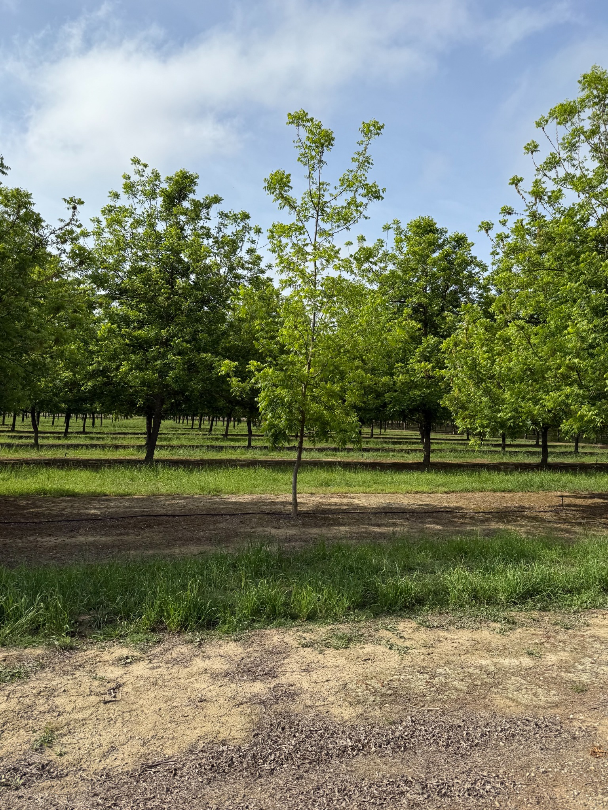

Aerial Mapping
High-resolution drone imagery, orthomosaics, and current-site basemaps.

Practical aerial mapping and geospatial support for agriculture and land-based projects.
FAA Part 107 certified
Services
High-resolution drone imagery, orthomosaics, and current-site basemaps.
Mapping for fields, blocks, rows, acreage, and spatial data.
Map production, spatial analysis, data organization, and field mapping support.

Mapping & analysis
RowWiseGeo combines aerial imagery, GIS, and field data to create practical mapping products for real-world projects.

Experience
Background in agricultural drone operations, orchard mapping, GIS, and field data collection.
M.S. in Geographic Information Science.
Service area
Available for projects throughout the western U.S. and beyond.
Contact
Get in touch to discuss the site, desired deliverables, and whether RowWiseGeo is a good fit.